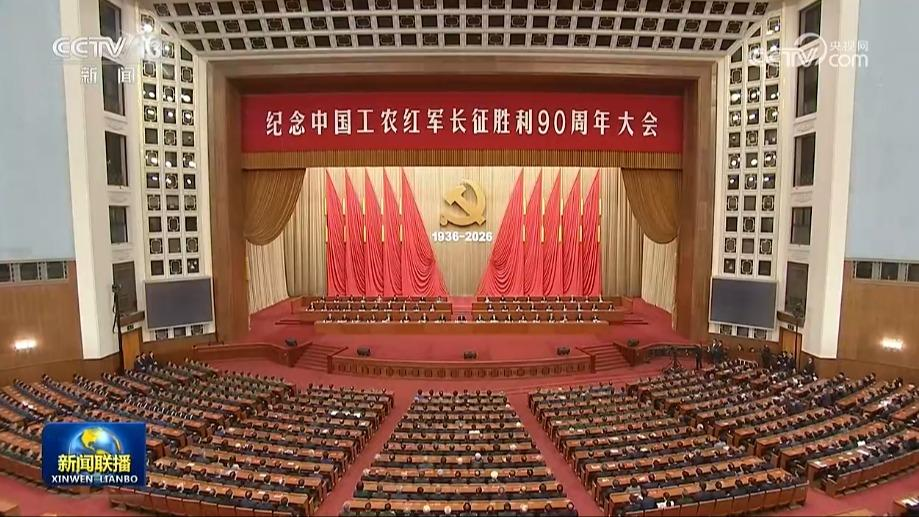
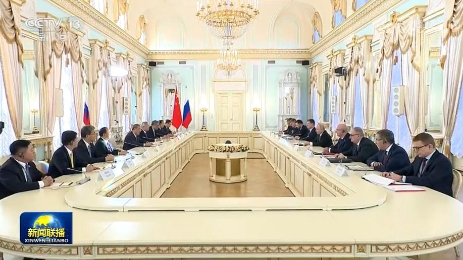
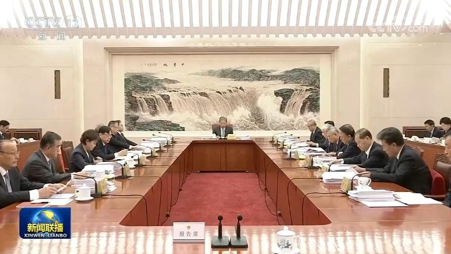
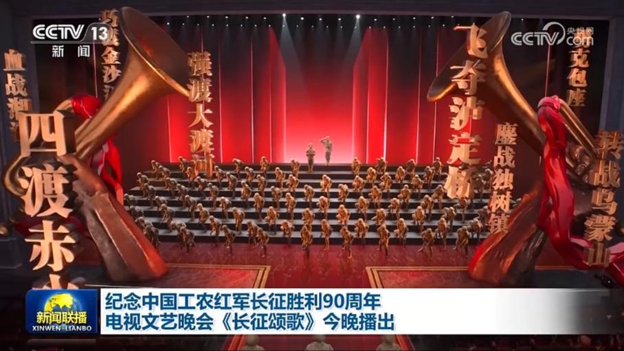
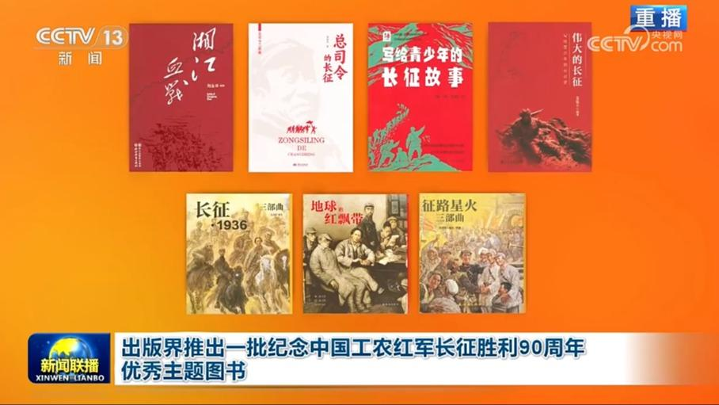
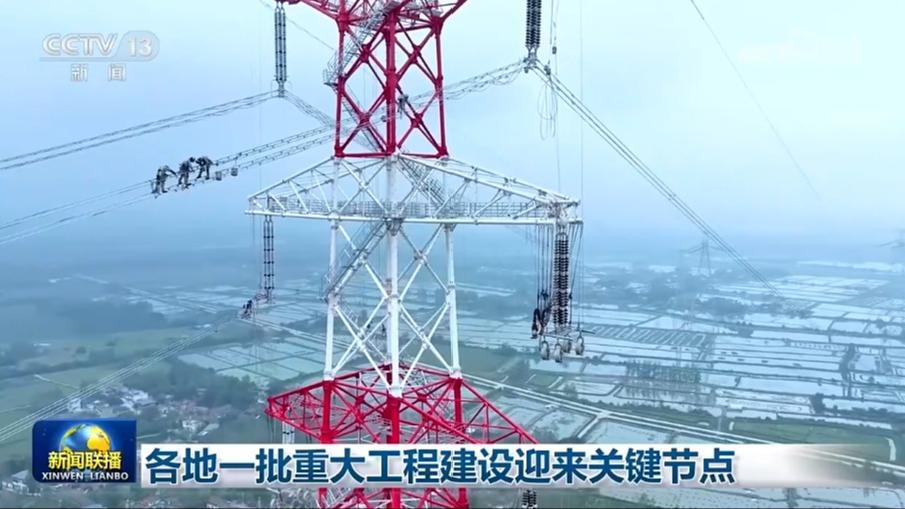
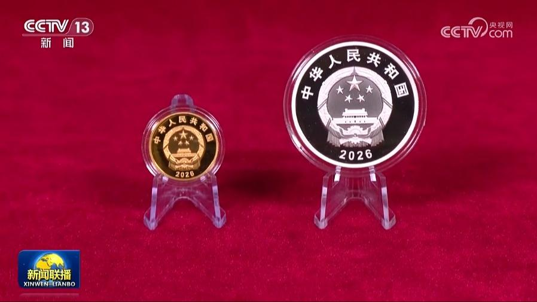
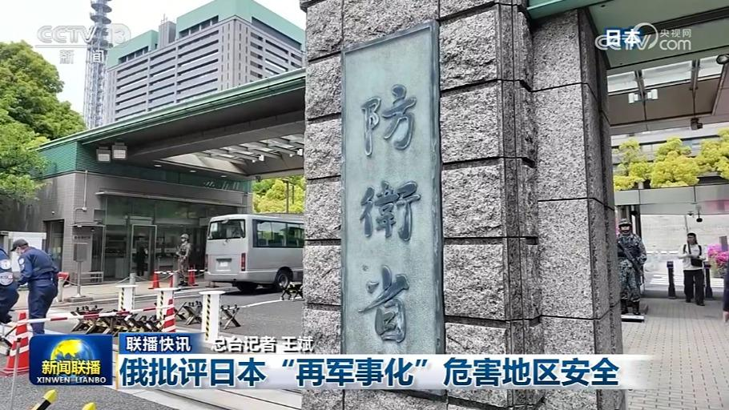

01

纪念中国工农红军长征胜利90周年大会在京隆重举行
纪念中国工农红军长征胜利90周年大会在京隆重举行习近平发表重要讲话


纪念中国工农红军长征胜利90周年大会在京隆重举行习近平发表重要讲话
本台今天（10月22日）播发央视快评《在新的长征路上奋力创造新的辉煌》。

当地时间10月21日下午，国务院总理李强在圣彼得堡会见俄罗斯总统普京。李强转达习近平主席对普京总统的亲切问候和良好祝愿。李强表示，今年以来，两国元首两度会晤，就深化中俄关系与合作作出进一步规划。中方愿同俄方加强战略沟通，夯实政治互信，加强能源、经贸、交通运输等务实合作，促进两国共同繁荣。中方愿同俄方密切在多边平台的配合，捍卫共同利益，维护公平正义。
10月22日上午，国务院总理李强在结束中俄总理第三十一次定期会晤后，乘包机回到北京。国务委员兼国务院秘书长吴政隆等陪同人员同机抵达。

十四届全国人大常委会第七十四次委员长会议22日下午在北京人民大会堂举行。赵乐际委员长主持会议。会议决定，十四届全国人大常委会第二十五次会议11月2日至6日在北京举行。

由中央宣传部、文化和旅游部、中央广播电视总台、中央军委政治工作部、北京市委主办的纪念中国工农红军长征胜利90周年电视文艺晚会《长征颂歌》，将于今晚（10月22日）8点在中央广播电视总台央视综合频道、综艺频道、国防军事频道等电视频道，央视新闻、央视频、央视网等新媒体平台播出。……

为纪念中国工农红军长征胜利90周年，出版界紧紧围绕“弘扬伟大长征精神，走好新时代的长征路”主题，集中推出《伟大远征：中国工农红军长征纪实》《红军长征档案史料选编》《我的长征：老红军口述实录》《长征专题书目（1936-2026）》《长征何以永远》《传承与弘扬——从伟大建党精神到长征精神》等一批主题图书。……
国务院新闻办公室今天（10月22日）举行“开局起步‘十五五’”系列主题新闻发布会。商务部有关负责人表示，今年前三季度，我国商务运行总体平稳、稳中有进，为“十五五”开好局起好步奠定了坚实的基础。

眼下，各地一批重大工程建设迎来关键节点，为经济社会高质量发展夯实基础。今天（10月22日），在安徽芜湖，“西电东送”重点工程——甘肃至浙江±800千伏特高压直流输电工程开始了长江大跨越放线工作，预计月底前将实现安徽段全线贯通。甘肃至浙江±800千伏特高压直流输电工程途经6省份，全长约2370公里，投产后年送电量将达360亿千瓦时，其中一半以上是绿电。

长征胜利90周年金银纪念币今日发行
俄罗斯总统助理乌沙科夫21日表示，俄总统普京当天在与美国总统特使威特科夫会晤时说，俄方愿意于11月中旬重启俄罗斯、美国和乌克兰三方会谈。会谈可能在阿联酋阿布扎比举行，主题涉及冲突结束后俄乌安全体系建设。乌沙科夫同时表示，普京和威特科夫还谈到了俄罗斯向美国和全球市场供应柴油协议的执行问题。双方强调，该协议不仅符合俄美双方利益，还将有助于稳定全球燃料市场。

俄批评日本“再军事化”危害地区安全